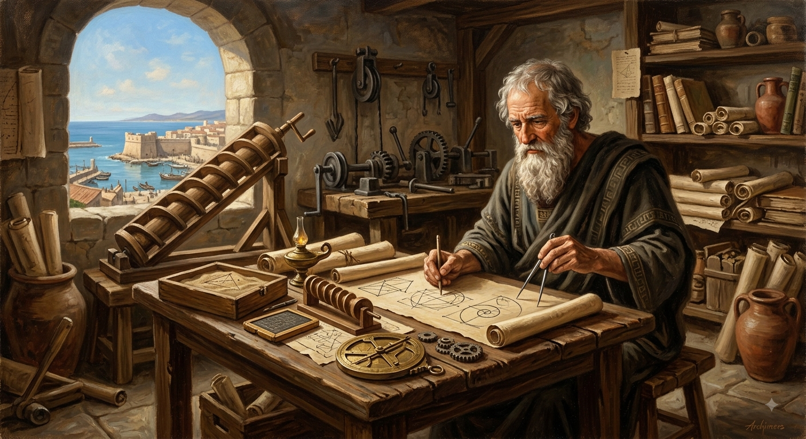
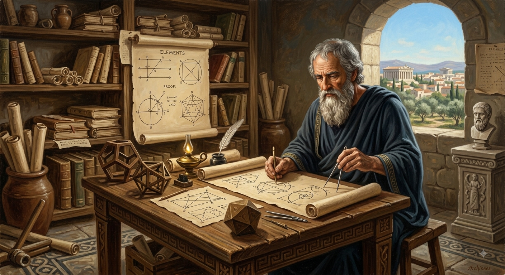

Seja bem vindo
Por: Prof Mauro
Boas-vindas ao meu novo blog! Aqui vou compartilhar dicas e desafios sobre Matemática.
Vou compartilhar conhecimentos sobre Matemática
Por: Prof Mauro
Boas-vindas ao meu novo blog! Aqui vou compartilhar dicas e desafios sobre Matemática.

Por: Prof Mauro
Arquimedes nasceu na Sicília sendo filho de um astrônomo, fato que fazia sua casa ser frequentada por
muitos intelectuais. Foi o principal matemático da antiguidade, aplicando as noções de geometria.
Além disso, estudou forças, alavancas e vários conceitos relacionados à mecânica.
No seu lado inventor, criou o chamado parafuso de Arquimedes, que era utilizado na retirada de água
dos navios. Além disso, inventou a alavanca que possibilita levantar cargas pesadas, além de
desenvolver a ideia de “gravidade específica”, atualmente conhecida como princípio de Arquimedes.

Por: Prof Mauro
Euclides é conhecido como pai da Geometria e um de seus principais legados é o livro “Elementos de
Euclides”, onde reuniu conhecimentos matemáticos de Tales, Pitágoras, Platão e os desenvolvidos por
ele mesmo.
Também ajudou com a fundação da Escola Real de Alexandria, no Egito.
Suas obras contribuem para diversos estudos realizados atualmente, como os da mecânica, da luz, da
navegação e até da medicina. Além destes, também estão entre suas obras o Postulado das Paralelas e
os Axiomas de Euclides, um grupo de leis demonstradas partindo de postulados.